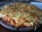

Pizza
Pizza
Pizza é uma preparação culinária que consiste em um disco de massa fermentada de farina de trigo, regado com molho de tomates e coberto com ingredientes variados que normalmente incluem algum tipo de queijo, carnes preparadas ou defumadas e ervas, normalmente orégano ou manjericão, tudo assado em forno.
Alguns tipos e sabores
A variedade de coberturas que se pode colocar sobre uma pizza é quase infinita, entretanto, algumas preparações são tradicionais e têm fiéis seguidores:
 Margherita
Margherita Mussarela
Mussarela Portuguesa
Portuguesa Calabresa
Calabresa Califórnia
Califórnia Pepperoni
Pepperoni- Quatro queijos
 Bacon
Bacon
Fontes
http://pt.wikipedia.org/wiki/Pizza
http://www.pizza.it
http://em.wikipedia.org/wiki/History_of_pizza
www.pizzaonline.com.br